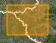
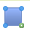
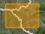

Coordinates of value selected will be shown below the map:

This functionality is enabled only for raster datasets.
Click on  to activate the query by box functionality: left mouse click on the map to activate the drawing of the regular box over it.
Keeping the left button pressed over to map and draw the regular box: when you have finished, release the button.

Coordinates of value selected will be shown below the map:
This functionality is enabled only for raster datasets.